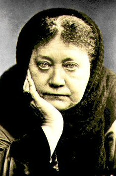

Friday, August the 19th, 2005
back to: title, date or indexes

The above photograph of Chlorine Winslow shows why she was often stopped in the street by people who mistook her for Madame Helena Blavatsky, the Theosophist.